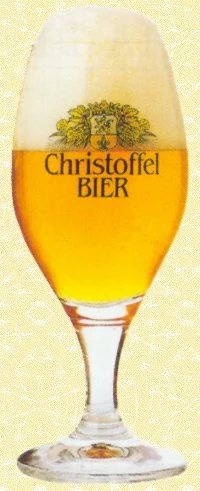
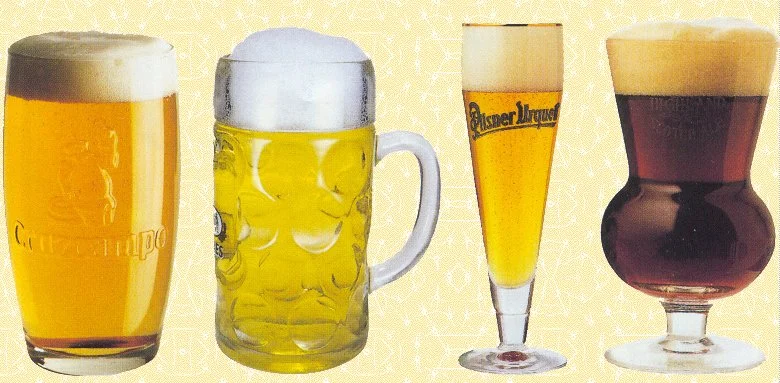

Recipientes
El recipiente ideal para la degustación
Ante los distintos recipientes cerveceros (copas, vasos y jarras) existentes y su diversidad de formas y tamaños, se nos plantea una pregunta: ¿existe el recipiente idóneo para degustar cualquier tipo de cerveza? La respuesta dista mucho de ser sencilla.
Los estilos de cervezas son múltiples, y aunque no se requiere un modelo de recipiente para cada uno (algunos muy próximos pueden utilizar el mismo) es muy difícil encontrar un recipiente que se adapte en mayor o menor medida a todas las necesidades y sea capaz de responder bien a la hora de resaltar la amplia variedad de aromas, sabores y colores, o la ausencia de ellos.
Si la cerveza es muy aromática precisa de un recipiente de boca ancha que facilite la difusión de su fragancia; por el contrario, si es poco aromática se apreciará mejor con uno de boca estrecha, que concentre los tenues efluvios del caldo.
Hay que tener también en cuenta que, cuando se sirven, no todas las cervezas responden de la misma manera. Unas forman una gran corona de espuma, mientras que otras apenas producen un ligero mantillo espumoso. En el caso de las primeras, es necesario, pues, que el recipiente permita la correcta formación de la espuma. Por ello es preciso disponer de un recipiente de ciertas dimensiones.
Como se ve, el tema tiene su complejidad, y ello sin entrar en la disquisición de si es mejor utilizar una copa, un vaso o una jarra. Con todo, cuando se realiza una cata hay cuatro premisas indiscutibles relativas al recipiente:
- Primera: Ha de ser de cristal fino, transparente, incoloro y sin marcas de ningún tipo, a fin de que la cata visual se pueda hacer sin elementos que desvirtúen los valores intrínsecos de la muestra.
- Segunda: Debe haber una separación amplia entre la base de apoyo del recipiente y el comienzo de la cavidad contenedora, de modo que apenas afecten las refracciones lumínicas de la superficie de apoyo. Ello se consigue sin dificultad con un pie, por lo que las copas resultan más apropiadas para la cata. Algunas jarras y vasos de base gruesa obvian este inconveniente, pero tienen la desventaja de su mayor peso.

- Tercera: El usuario debe servirse del recipiente tocando lo menos posible sus paredes para no transmitirle calor ni perturbar la apreciación visual. Tanto el pie de la copa como el asa de la jarra responden a ambas condiciones.
- Cuarta: Debe tener una forma ligeramente abombada en la parte inferior para facilitar que la cerveza se tire bien. El resto de la copa debe tener paredes verticales para facilitar el ascenso de la cerveza.
Si bien pudiera parecer difícil la elección de un recipiente ideal, los expertos se han decantado por un tipo que utilizan para efectuar sus catas generales. Se trata de una copa bastante parecida al catavinos aunque algo mayor (33 cl de capacidad, más un espacio para la espuma) y de paredes más abombadas, que los expertos en cerveza han elegido como recipiente idóneo para efectuar las degustaciones. El modelo más conocido es la copa Senator, de la empresa cristalera Rastal, el mayor fabricante europeo de recipientes de cerveza. Esta copa es utilizada también por algunos cerveceros, como Christoffel.

Los recipientes de los fabricantes
Como es lógico, para el consumo habitual no hemos de ser tan exigentes, pero tampoco debemos contentarnos con cualquier recipiente.
Por lo general, el fabricante ofrece para sus productos copas, vasos o jarras serigrafiados, que en muchas ocasiones son el resultado de complejos estudios orientados a resaltar las cualidades de la cerveza. Pero no siempre es así, pues en otros casos esos recipientes responden más a modas pasajeras, costumbres locales o razones de marketing, y aun de costes.
Por ello no es de extrañar que un fabricante presente para el mismo producto un recipiente en una zona geográfica y otro completamente distinto -e incluso, a veces, antagónico- en otro país.